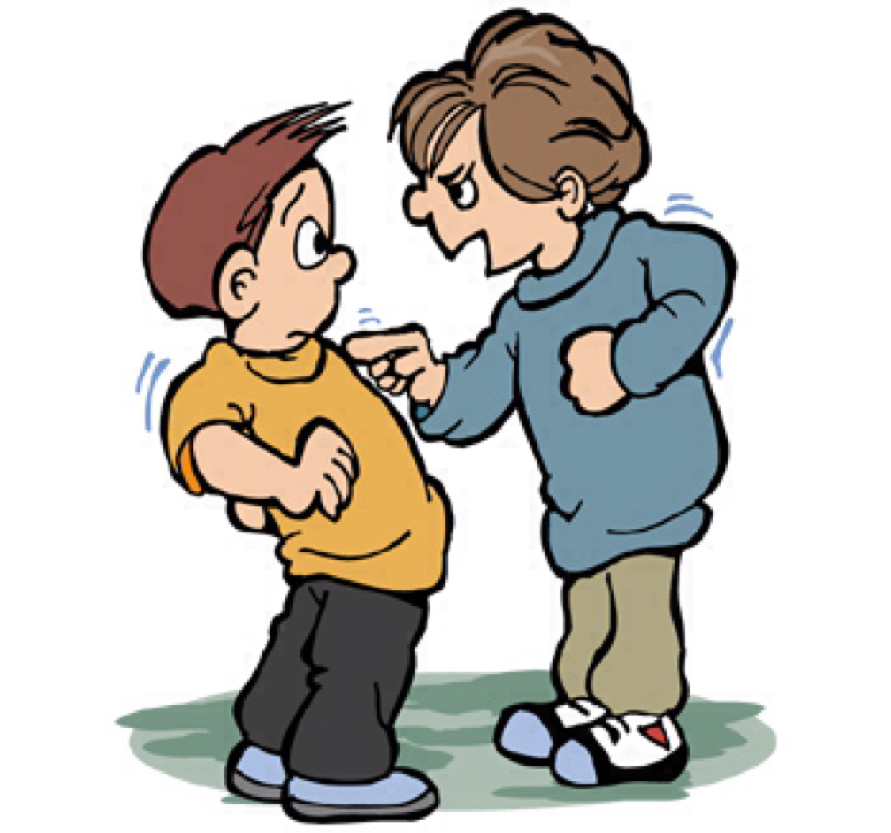

My Experience Of being Bullied My first Time I ever felt bullied is probably in the 6th grade. it was at lunch and I was minding my own business and all of a sudden this boy asked me OUT OF NOWHERE he asked out like I didn't even no him but my best friend did and she called him Bread head. bread heads real name is Luke.but lets get back to the story.So like any kid that gets asked out for the first time.I literally Blushed like my cheeks were red as a tomato my friends kept asking what was wrong.but i just knocked them out of thoughts but then Luke said is it a yes or a no.I stuttered for like 3 minutes but i told him i will give you my answerer on Monday but the funny part was that on Monday he told me it was a prank, so that broke my heart I thought he liked me but HE DID'NT.So after he started calling me a guy and said,"I would've dated you but I'm not gay.Then I said some pretty bad stuff like get you and your bad self out of here and I may have called a girl but know I know not to be a name caller or a bully I learned to just brush it off and mind your own business.my mom said just mind my business but I mean it kinda is my business if you think about it.basically he ended up not talking to me ever again.
